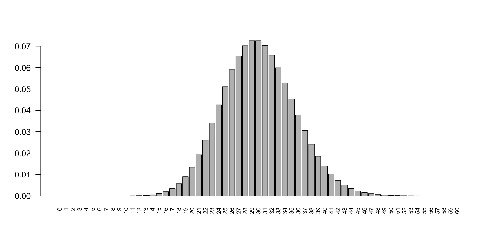
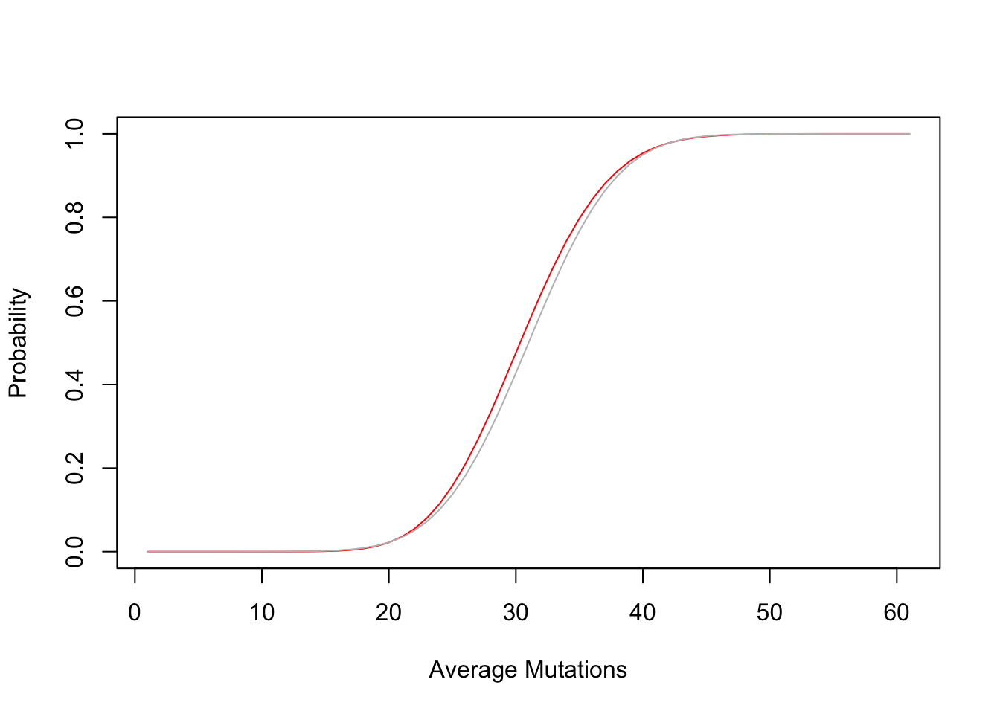

6 4. Poisson distribution
A Poisson distribution can be defined as - \[P(x) = \frac{{e^{ - \lambda } \lambda ^x }}{{x!}}\]
where \(\lambda\) is the mean which also equals variance and \(x\) is the number of experiments done.
An experiment follows a Poisson distribution if:
- The outcomes are of only two types (binary): success or failure, yes or no, present or absent etc
- The mean of successes \(\lambda\) that occurs in a specified interval is known.
- The probability of success is proportional to the size of the interval.
- The probability of success in a very small interval approaches zero.
- Intervals can be length, area, volume, time, etc.
6.0.1 4.1 Practical example of a Poisson distribution
A real example of an experiment following the Poisson distribution is gene mutation
- The outcomes are of only two types (binary): mutated vs not mutated
- Average mutation \(\lambda\) that occurs in a specified interval (gene length) is known. Humans have a mutation rate of \(10^{-8} mutations/bp/generation\) (see here)
- The probability of mutation is proportional to the length of the gene. Longer genes accumulate more mutation.
- The probability of mutation in a very small genomic region is close to zero
Let’s perform the following calculation:
- Human mutation rate = \(1 \times 10^{-8} mutations/bp/replication\)
- Human genome size = \(3 \times 10^{9}\) bp
- Thus, number of mutation accumulated after one generation = \(10^{-8} \cdot 3 \times 10^{9} = 30\)
Now, what if we ask the question, what is the probability of observing 10 or less mutations after one generation using a Poisson distribution model build with the parameters \(\lambda\) calculated above.
## [1] 2.234878e-05We can plot the probabilities for \(q=0:60\) and see how the probabilities change:
plot(ppois(q = 0:60, lambda = 30), type="b", xlab = "Average Mutations", ylab ="Probability")
abline(v=30)
A different way of visualizing the data which is more intuitive and clear is by plotting the densities of probabilities. We do the same as before using the Poisson distribution.

We clearly see that it is much likely to get 30 mutations than others.
Can you make the above prediction using the normal distribution instead? Hint: \(\lambda = mean = variance\) see above equation. Derive the standard deviation from the variance. What difference do you see ? What is your interpretation ?
pd = ppois(q = 0:60, lambda = 30)
nd = pnorm(q = 0:60, mean = 30, sd = sqrt(30)) # since var = sd^2
plot(pd, col="red", type="l", xlab = "Average Mutations", ylab ="Probability")
lines(nd, col="grey", type="l")